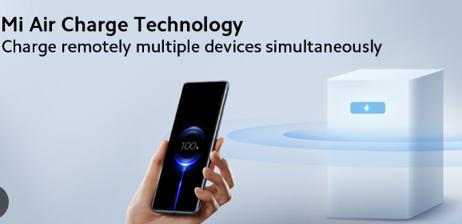
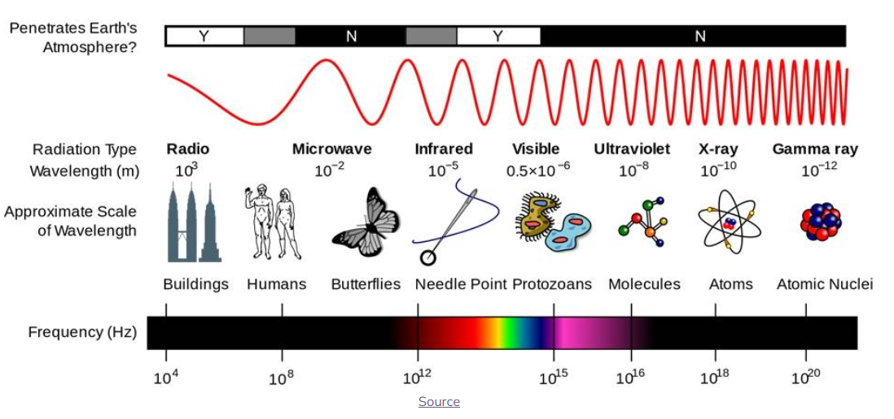

The future of wireless charging – will it change?
Charging technology has come a long way over the years. From traditional plug-in chargers to the convenience of wireless charging pads, each step has aimed to make powering devices easier and more seamless. Now, Xiaomi is pushing the boundaries even further with its Mi Air Charge technology, which allows devices to be charged through the air—completely eliminating the need for cables or charging pads. While still under development, this breakthrough innovation has the potential to redefine how we interact with our gadgets and could shape the future of electronics in ways we’re only beginning to imagine.
Xiaomi’s Mi Air Charge works using an advanced combination of wireless power transmission and smart tracking. It can deliver up to 5W of wireless charging to multiple devices over a few meters, making it far more versatile than traditional methods. At its core is a 144-antenna system that precisely detects the smartphone’s position in real time. Once located, the system beams focused energy toward the device, where a built-in receiver with 14 antennas converts these signals into usable electricity. This seamless process allows devices to charge without cables, pads, or physical contact, opening the door to a truly wireless future.
The biggest advantage of Xiaomi’s Mi Air Charge is the complete freedom it offers from traditional charging methods. With no cables, pads, or docks required, users can charge multiple devices simultaneously without experiencing slowdowns. It also brings unmatched convenience by allowing devices to charge even while you move around, removing the need to stay in one place. Beyond smartphones, this technology has exciting potential for smart homes, where it could power everyday devices, trackers, and appliances seamlessly in the background, creating a truly wire-free ecosystem.
The potential uses of Mi Air Charge extend far beyond just smartphones. Imagine phones and smartwatches that never run out of battery because they’re constantly charging in the background. In the medical field, devices like pacemakers could be powered safely without invasive procedures. Even larger applications are possible, such as electric cars charging wirelessly in garages without needing to be plugged in. At home, everyday gadgets like TVs, speakers, and smart lights could operate completely cable-free, making living spaces more organized, convenient, and futuristic.
While Mi Air Charge is groundbreaking, it also comes with several challenges that need to be addressed before mainstream adoption. At present, its power output is limited to just 5W, which is much slower compared to wired or even advanced wireless chargers. The effective range is also restricted, as charging efficiency weakens with distance. Health concerns about long-term exposure to concentrated energy signals add another layer of hesitation, along with possible government regulations that may restrict its use. On top of that, the technology is likely to be expensive and complex to set up on a large scale, making widespread adoption a significant hurdle in the near future.
Xiaomi first introduced Mi Air Charge in 2021, but the technology is still not available for consumers. The company continues to refine the system, improve its efficiency, and secure patents, ensuring it is both safe and practical. As of now, Mi Air Charge remains in the testing phase and is not yet ready for commercial release. Additionally, regulations and safety approvals need to be cleared before it can officially enter the market, meaning it may take some time before we see this futuristic charging method in everyday use.
Xiaomi isn’t alone in exploring the future of wireless charging. Tech giants like Samsung and Apple are reportedly working on similar innovations, while companies such as Energous with its WattUp technology and Ossia with Cota are pushing the boundaries of long-distance charging. These developments hint at a future where, by 2030, charging devices from across the room could become the norm, potentially replacing traditional wired and pad-based methods altogether. This competitive race could accelerate progress, making truly wireless charging a standard feature in our daily lives.